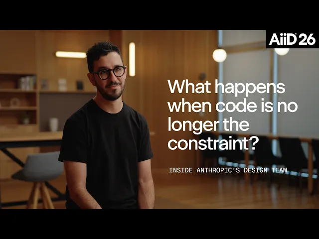
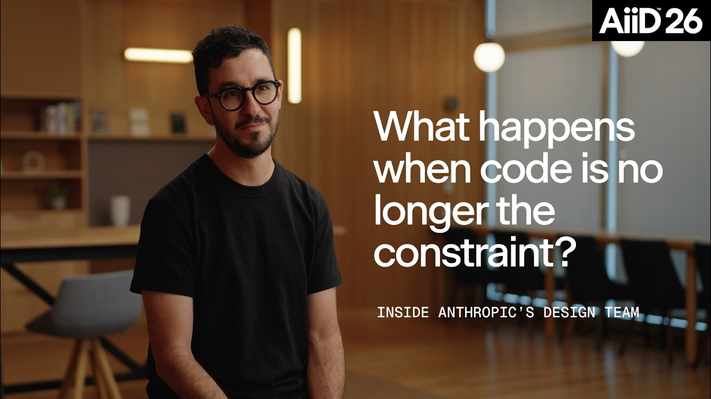

中文全文译文：由「译文工坊」根据英文原文自动翻译生成，供学习参考。结构与措辞以译文为准；想看原始论述，请点上方「阅读原文」。

Designer Fund
几十年来，软件行业一直遵循一条隐含的规则：工程人力是最终的瓶颈。想法永远远多于能把它们做出来的人，而把任何一个构想变成现实，都缓慢、昂贵又繁琐。
过去几年里，AI 开始扭转这一局面。Anthropic 生动地预演了当执行变得大幅简单时会发生什么。截至 2026 年 5 月，该公司合并的代码中，超过 80% 由 Claude 编写。
AI 把开发周期从数周缩短到数小时，团队有时甚至在还没就“这是不是个好主意”达成一致之前，就能做出一个可运行的原型。这让更多的重担落到了设计身上。Anthropic 的产品设计团队花在琢磨如何构建上的时间越来越少，越来越多地聚焦于判断什么值得去做。
当代码变得廉价、可运行的软件几乎能即时生成时，产品开发的核心挑战就从“我们怎么做出来？”转向了“我们到底该不该做？”
我们采访了 Anthropic 产品设计负责人 Joel Lewenstein，以及他团队中的设计师 Nate Parrott、Meaghan Choi、Kyle Turman 和用户体验研究员 Matt Gallivan，了解他们如何适应这些变化。


你将了解到：
- 当工程比设计更快时会发生什么
- Anthropic 的设计师如何更贴近生产环境
- 为什么自己动手做工具已成为工作的一部分
- AI 如何改变协作、评审以及设计师所需的技能
设计与工程速度之间的差距
过去需要数周工程工时的功能，现在几天内就能发布，有时甚至只需几小时。
这正是产品开发当下发生的变化的关键，也是设计团队面临新压力的原因之一。模型每进步一次，工程的执行速度与团队选定方向并达成一致所需时间之间的差距就会进一步拉大。
Joel 把这种现象称为时间尺度压缩。工程师的速度比以前快了大约 10 倍；相比之下，设计只提速了 3-5 倍。

这种失衡带来了组织层面的摩擦：当工程师 48 小时就能做完整个功能时，要为一周的设计探索给出理由就变得困难。“时间现在是一个既有意思又极具挑战的维度，”Joel 说。
要弥合这一差距，就需要重新思考设计师如何分配时间、如何与代码打交道，以及 AI 可以在哪些环节接手常规工作，让人专注于判断。
直接在发布所用的媒介中工作
Anthropic 的每位设计师在入职第一周都会提交一个拉取请求。
有些人大部分时间都在写代码，也有些人只用代码做原型或最后的打磨。Joel 对具体的工作流并不执着，只要设计师始终离最终产品足够近，能够对它产生影响就行。
“代码基本上就是工具箱里的又一件工具，用来按我们想要的方式影响用户体验。没有任何理由不深度参与最终的交付过程。代码一直都是软件的黏土。”
直接在这块黏土上做设计，会迫使你立刻坦诚面对问题。静态设计稿可以掩盖一个别扭的过渡，可一个能运行的原型却做不到。如果点击某个元素需要一个新状态，这个状态就必须存在。正如 Joel 所说：“在原型里你没法糊弄。”
为了更贴近生产环境，一些设计师把过去会打断工作节奏的技术步骤自动化了。负责 Claude Code 和 Cowork 设计的 Meaghan Choi，为自己反复要做的事情构建了可复用的 skill：
- /fresh 让她同步最新代码并新建一个干净的分支，这样她无需手动配置就能直接开始修改。
- /preview 在本地启动前端，让她可以立即查看并测试自己所做的改动。
当她遇到不理解的 Git 或部署步骤时，就让 Claude 来解决。如果同样的问题再次出现，她就把解决方法做成一个可复用的 skill。
今年早些时候，Meaghan 在纽约的 Dive Club 活动上展示了一个更有野心的示例（完整演示请看这里）。她的 /prototype skill 可以接收一个功能想法，并生成可交互的 HTML 预览。她通常会让 Claude 给出五个变体，再请它推荐最强的方案并说明理由，最后由她自己做决定。

但它的价值不止于做原型。“编程真正的超能力，不在于你只是在沙盒里做原型，而在于你真正把东西推到生产环境，”Meaghan 说。“因为那才是你的用户最终会看到的成品。”
这种掌控感，正是她现在觉得设计如此有趣的原因之一：
围绕自己的瓶颈来构建
Anthropic 的安全与隐私要求，限制了员工可以使用的部分第三方软件。其结果之一，是形成了浓厚的自己动手构建的文化。
设计师们快速搭建小应用，在内部部署，并相互分享，形成了一座枝繁叶茂的工具花园。有些工具成为团队日常工作流的一部分；有些只是为某个人解决一个很窄的问题，不需要再往前走。正如 Joel 所说：“我们就是自己动手做工具。”
Kyle Turman 是公司第一位全职产品设计师，他估计 Anthropic 的员工已经为自己打造了至少 30 个定制 IDE。通常的场景是这样的：“嘿，我做了个很酷的工具。你可以直接用，也可以 fork 一份，或者拿走一部分代码，做你自己的版本。”
尤其令人兴奋的是，这种构建定制软件的能力，正在极大地拓展非技术背景的团队成员能做的事情。
Joel 希望有一种更一致的方式来了解用户对 Anthropic 各产品的感受，于是 UX 研究员 Matt Gallivan 用 Claude 搭建了一套每周调查系统和仪表盘。他大约花了一周时间就让它运转起来；据他估计，这在过去需要两三位研究员花上几个月。
Matt 这样描述他角色的变化：
“从 2026 年初开始，我既是用户研究员，又是产品设计师，还是一部分 PM 和一部分工程师。作为一个非技术背景的人，我在做一些本来完全轮不到我做的事，但这些事确实带来了真正的价值。它让我的工作更高效，也在推动团队向前。”

这些内部工具往往会演变为核心项目，Claude Code 就是一个典型：它最初只是 Boris Cherny 在 2024 年的业余项目。
2025 年秋天，Nate Parrott 是 Claude Code 的 VS Code 体验团队中唯一的产品设计师，团队里还有两位工程师。随着 Claude 加快了工程师的工作节奏，Nate 也开始尝试用它更快地探索设计想法。他决定把 Anthropic 完整的设计系统（字体、颜色、组件、内容规范和 UI 模式）输入一个 HTML 生成环境。
过去他要在 Figma 里手动起草三个方案，现在可以并排生成十几个可交互的变体，并在效果好的方案上继续分支探索。
在同事们开始用它做会议演示之后，Anthropic 指派了一个专门的团队，把它打造成用于视觉探索和原型设计的完整产品，最终成为了 Claude Design。Nate 在这篇访谈中讲述了更多故事。

一种全新的协作节奏
人人借助 AI 飞速推进，也有一个陷阱：你很容易陷入一个人的闭环。大家花更多时间在提示词设计和终端上，与队友面对面来回交流的时间却变少了。
为了让团队保持步调一致，Anthropic 调整了一些协作仪式：
- 更小、更频繁的评审：团队从每周两次的大组会议，改为每周最多四次的小组会议。“以我们现在的节奏，指望每周开一次会、工作就能保持稳定不变，简直可笑。”Joel 说。
- 用演示代替文档：设计师不再撰写冗长的规格说明文档，而是带着可运行的代码原型来引发讨论。在 Kyle 的团队里，每日站会从 30 分钟延长到 90 分钟，先充分讨论需求和架构，下午再用 Claude 去实现。
- 保留上下文：由于代码历史缺少基于画布的设计工具那种可视化的演变脉络，一位设计师开发了 go/krit，用来记录项目状态、管理评审会，并梳理各团队反复出现的 UX 主题。
这里出现了一种明显的反转：AI 让独立执行几乎毫无阻力，而这种速度可以腾出更多时间用于高带宽的协作。对 Kyle 来说，有更多空间与队友一起讨论问题，是这种工作方式最有收获的一点。
与此同时，更多会议并不总是答案。设计中有些环节仍然需要不被打扰的独处时间，试图优化创作过程中的每一分钟反而会错失重点。AI 可以在几秒内调出过往的用户研究，或生成几十个初始布局，但 Joel 认为，人类创造力有一个核心部分根本无法被加速。
“总有一些难以言喻的东西，我需要花一天时间散散步，让大脑放松，再睡一觉，让神经元建立连接，”Joel 说。“我们仍然需要守护这段时间。”

Anthropic 看重怎样的设计人才
在 Anthropic，优秀设计师的标准正随着工作本身一起变化。技术素养很重要，但 Joel 并不期望每位设计师整天编写生产代码。更有帮助的是，对 GitHub、分支和拉取请求这类开发者工作流有基本的熟悉度，这样代码就不会成为障碍。
除此之外，他还看重几点：
- 愿意不断改变自己的工作方式。“几乎每隔几个月，你就得重新思考自己的流程，”Joel 说。他称之为一种蜕皮：尝试新工具，放下不再合理的工作流，并随着模型的演进重建自己的流程。
- 对软件的走向有自己的见解。团队希望设计师认真思考过，未来几个月界面和交互模式可能会如何变化，而不是等着拿到范围完整的需求说明。
- 创造者心态。有时工作是设定更大的产品方向；有时则是深入细节，动手构建下一个版本。最出色的设计师能在两者之间自如切换。
什么值得去做？
Joel 经常回到 The Squiggle，这是 Damien Newman 绘制的设计过程插图，展示了设计从混乱与不确定走向单一焦点的过程。AI 能让 Squiggle 的左半部分推进得快得多：更多想法、更多原型、更多被探索的方向。但它并不会消除收敛的必要。甚至可以说，可能性太多，反而让抵达最终的焦点更加困难。
正如 Joel 所说：“我们可以做出世界上所有的软件，可我的手机里只装了 16 个应用，我一天也只有 18 个清醒的小时。问题不只是我们能不能做出来？更是这东西到底值不值得做？”

当代码不再是约束：走进 Anthropic 的设计团队
Stripe 如何为好点子的传播创造空间
下一篇
近期文章


文章中的视频
- hereYouTube